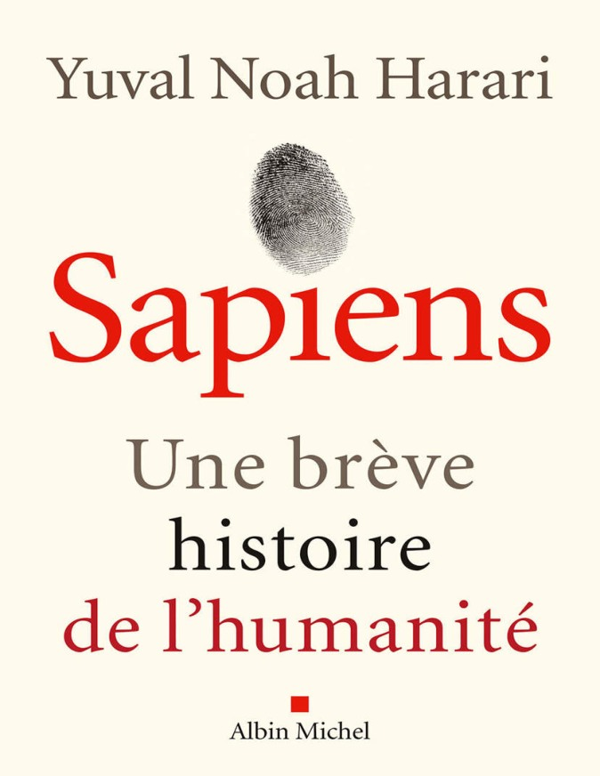

Sapiens — Une brève histoire de l’humanité





Carte d’identité
- Auteur
- Yuval Noah Harari
- Genre
- Savoirs
- Sous-genre
- Histoire
- Éditeur
- Albin Michel
- Parution de l’édition
- 2 septembre 2015
- Première parution
- 2011
- ISBN numérique
- 9782226332202
- Autres ISBN
- 9782226257017 (papier)
- Langue de l’édition
- Français
- Fichier du site
- PDF · 498 pages
Édition française parue le 2 septembre 2015. ISBN papier : 9782226257017. Première publication de l’œuvre en hébreu : 2011.
Traduction : Pierre-Emmanuel Dauzat.
 Résumé du livreL’essentiel en quelques lignes
Résumé du livreL’essentiel en quelques lignes
Yuval Noah Harari remonte aux premières sociétés humaines pour comprendre la place prise par Homo sapiens. Il suit le rôle du langage, de l’agriculture, de l’argent, des empires et de la science. Son récit avance une question qui revient d’un chapitre à l’autre, celle de ce que les humains gagnent et perdent en transformant leur monde.
 Chapitre par chapitre20 entrées
Chapitre par chapitre20 entrées
-
01 Une espèce parmi d’autresPDF p. 5
Harari replace Homo sapiens parmi plusieurs espèces humaines. Il part de cette diversité pour demander comment une espèce relativement ordinaire a fini par transformer son environnement.
Lire à cette page ↗ -
02 Le langage et les récits partagésPDF p. 24
L’auteur avance que raconter des histoires communes permet de coopérer au-delà du cercle des proches. La confiance dans ces récits devient une force collective.
Lire à cette page ↗ -
03 Le quotidien des chasseurs-cueilleursPDF p. 50
À partir de traces et de comparaisons, Harari reconstitue quelques aspects de la vie avant l’agriculture. Il rappelle la diversité des groupes et ce qui échappe aux archives.
Lire à cette page ↗ -
04 Des migrations qui changent les écosystèmesPDF p. 77
Le chapitre rapproche la diffusion de Sapiens et des disparitions d’animaux de grande taille. Il pose tôt la question des effets humains sur le vivant.
Lire à cette page ↗ -
05 La contrepartie de l’agriculturePDF p. 94
Cultiver nourrit davantage de personnes, mais fixe aussi les populations et peut alourdir leur travail. Harari oppose la réussite démographique à l’expérience des individus.
Lire à cette page ↗ -
06 Des sociétés plus vastesPDF p. 117
Surplus agricoles, villes et pouvoir politique rendent possibles de grands ensembles. Les hiérarchies et les récits communs contribuent à les maintenir.
Lire à cette page ↗ -
07 Stocker ce que l’on ne peut pas retenirPDF p. 141
Avec les impôts, les récoltes et les dettes, la mémoire individuelle ne suffit plus. Le chapitre explique le rôle des nombres, de l’écriture et des archives.
Lire à cette page ↗ -
08 Comment les inégalités se transmettentPDF p. 157
Harari examine des hiérarchies de caste, de race et de genre. Il distingue l’existence de différences de la manière dont une société décide de les transformer en règles.
Lire à cette page ↗ -
09 Des mondes qui se rapprochentPDF p. 190
L’auteur décrit une tendance de longue durée vers des ensembles plus connectés. Il annonce trois forces de rapprochement, l’argent, les empires et les religions.
Lire à cette page ↗ -
10 La confiance derrière l’argentPDF p. 201
Le chapitre explique comment des personnes qui ne se connaissent pas acceptent une même unité d’échange. L’argent facilite la circulation des biens entre cultures.
Lire à cette page ↗ -
11 L’héritage des empiresPDF p. 220
Les empires réunissent des populations par la conquête, puis font circuler des institutions, des langues et des usages. Harari observe ce qui survit à leur chute.
Lire à cette page ↗ -
12 Les règles qui rassemblentPDF p. 242
L’auteur compare diverses traditions religieuses et idéologies. Il s’intéresse à leur manière de donner une légitimité à des normes communes.
Lire à cette page ↗ -
13 Pourquoi une culture se diffusePDF p. 276
Le succès d’une croyance ou d’une pratique ne coïncide pas forcément avec le bien-être de ceux qui l’adoptent. Harari interroge la direction et les effets des évolutions culturelles.
Lire à cette page ↗ -
14 Faire une place à l’inconnuPDF p. 287
Reconnaître les limites du savoir devient un moteur d’enquête. Le chapitre relie cette attitude à l’observation, aux mathématiques et aux usages pratiques de la science.
Lire à cette page ↗ -
15 La rencontre de la recherche et de la conquêtePDF p. 322
Expéditions, cartes et collections savantes se développent avec l’expansion européenne. Harari examine ce que la science et le pouvoir impérial retirent l’un de l’autre.
Lire à cette page ↗ -
16 Le pari sur la croissancePDF p. 355
Le crédit dépend de la confiance dans des revenus futurs. Le chapitre relie cette logique à l’investissement, à l’expansion des échanges et à leurs coûts humains.
Lire à cette page ↗ -
17 Les transformations de l’industriePDF p. 391
Les nouvelles sources d’énergie et l’organisation industrielle changent ce que l’on produit. Harari revient aussi sur la place des animaux dans cette économie.
Lire à cette page ↗ -
18 Une société en transformation permanentePDF p. 410
Le temps de travail, la famille et les solidarités se recomposent avec l’industrialisation. Les États et les marchés prennent en charge des fonctions auparavant exercées par les communautés.
Lire à cette page ↗ -
19 La question du bonheurPDF p. 441
Harari demande si l’augmentation des ressources rend effectivement plus heureux. Il compare plusieurs façons de comprendre la satisfaction et l’effet des attentes.
Lire à cette page ↗ -
20 L’avenir de l’espècePDF p. 468
Le génie biologique et la possibilité de modifier le corps ouvrent une discussion sur l’avenir de Sapiens. La dernière question porte sur les limites que l’humanité se donnera.
Lire à cette page ↗
Les fils du livre

Les étoiles venues d’ailleurs
Fnac — avis clients
Édition 2022 · PDF 2015Lire les avis sur Fnac ↗Relevé du 11 novembre 2026
Mon carnet de lecture
Mes étoiles
0 critique
Ma critique sur ce livre ↗